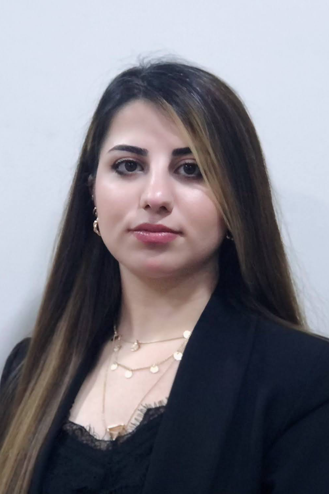

About Me
- Name: Zhewar Khdir Kak-Mala
- Nationality: Kurd
- Date of Birth: 06 December 1992
- Address: Azadi 2, Ranya, Kurdistan Region, Iraq
- Marital Status: Single
- Phone: +964 771 748 5134
- Email: zhewarkhidir@gmail.com
Career Statement
I am passionate about my work, which I consider doing my job professionally. I am an excellent communicator. I pride myself on making sure people have the right information because it drives better results. I am ambitious and driven. I thrive on challenge and constantly set goals for myself, so I have something to strive towards. I’m not comfortable with settling, and I am always looking for an opportunity to do better and achieve greatness.
Education
2016 - 2020 Media Department, Public Relations - University of Sulaymaniyah
Professional Experience
- 2006 - 2007 Children's TV Presenter at AZADI TV
- 2014 - 2015 News Reporter at Gali Kurdistan, Raparin TV, and Mashkhalan Radio
- 2015 – 2016 Programmer Scheduler at Raparin TV (Volunteer)
- 2015 - 2016 Radio Host & Producer at Dangi Zankoy Raparin
- 2018 - 2018 Summer English Course Tutor at Maple Kindergarten
- 2020 – 2020 Reporter & TV Presenter at Ranya HD TV
- 2022 – 2022 Media Dep. Manager at Woman Union of Kurdistan (Ranya Branch)
- 2022 – 2022 Reporter & Writer at Tawar Magazine & Zhiyanawa News Paper
Areas of Expertise
- Communication
- Public Relations
- Presentation
- Logical Thinking
- Networking
- Translation
- Social Media Management
- Media Management
- Office Works
- Social Marketing
- Planning Work-flow
Language Skills
- Kurdish (Native)
- English (Proficient)
- Turkish (Proficient)
- Persian (Proficient)
Other Skills
- Proficiency in Microsoft Office Programs
- Able to work as a part of a team or individually
- Able to communicate effectively both verbally and in writing
- Able to resolve problems and issues that arise during work
- Ability to prioritize and plan effectively
- Open to learning and easily adapting to new methods